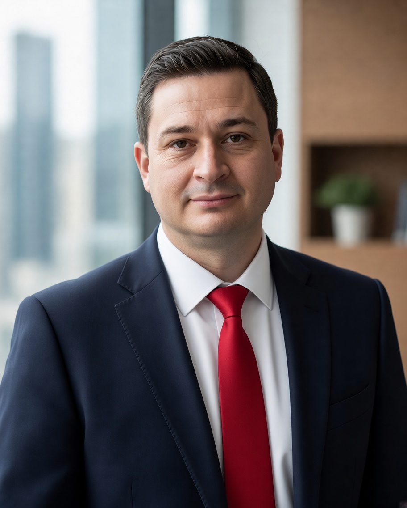

Senior Application Manager · Application Operations & Cloud Transformation
Nürnberg · Betrieb geschäftskritischer Enterprise-Anwendungen seit 2000

Chemie, Banken, Versicherungen, Automotive — durchgehend in regulierten Umgebungen, in denen Ausfälle teuer werden.
Ich betreue Anwendungen dort, wo sie laufen müssen: WebSphere, Tomcat, IBM MQ, DB2, Linux und AIX in regulierten Branchen. Über zwanzig Jahre Verantwortung für Verfügbarkeit, Security-Patching und Compliance über den gesamten Lebenszyklus — vom Incident bis zur Root-Cause-Analyse, von der Betriebsübernahme bis zur Steuerung externer Dienstleister.
Genau diese gewachsenen Landschaften stehen heute vor der Modernisierung. Bei Evonik habe ich diesen Weg mitgestaltet: Bewertung des Anwendungsportfolios nach dem 6R-Modell gemeinsam mit Application Ownern und Fachbereichen, anschließend Migration refaktorierter Java-Anwendungen nach Azure Kubernetes Service und auf die unternehmenseigene Kubernetes-Plattform.
2026 habe ich eine Weiterbildung in DevOps und AWS Cloud abgeschlossen — mit zwei IHK-Abschlüssen und Schwerpunkt auf Infrastructure as Code mit Terraform sowie CI/CD-Pipelines mit GitHub Actions. Die AWS-Zertifizierung zum Cloud Practitioner bereite ich derzeit vor.
AWS (Compute, Storage, Datenbanken, Netzwerke), Microsoft Azure, Cloud-Migration nach dem 6R-Modell, Skalierung und Hochverfügbarkeit
Docker, Kubernetes (AKS, Amazon EKS, On-Premises), Deployment über Helm-Charts, Rancher, Ressourcenkonfiguration für containerisierte Java-Anwendungen
Terraform, Ansible, CI/CD mit GitHub Actions, Jenkins, Azure DevOps
IBM WebSphere Application Server, Payara, WildFly, Java-EE-Anwendungsbetrieb, Performance-Analyse und Tuning
IBM MQ, IBM Integration Bus, JMS, ActiveMQ, RabbitMQ, MQTT, REST- und SOAP-Schnittstellen
Linux, AIX, Windows Server · Nginx, Apache HTTP Server, HAProxy, Apache Tomcat, IIS, Load Balancing, SSL/TLS
Relational: IBM DB2, Oracle, PostgreSQL · In-Memory: Redis · Backup und Restore, Hochverfügbarkeit, Migrationen
Prometheus, Grafana, Checkmk, Zabbix, Nagios
Incident-, Problem- und Change-Management (L1–L3), Eskalationssteuerung, Root-Cause-Analyse, Log-Analyse, Kapazitätsüberwachung, Patch- und Release-Management, Disaster Recovery, 24/7-Rufbereitschaft
Evonik Industries AG, Marl — über Infosys Technologies Ltd. und Hays Professional Solutions GmbH
Rund 40 Webanwendungen (Java, .NET, ColdFusion) mit 72 Serviceinstanzen über Produktions-, Test- und QA-Umgebungen, darunter fünf geschäftskritische Kernanwendungen. Team von sechs Personen, Gesamtportfolio rund 350 Anwendungen.
Ratiodata Romania S.R.L. (Ratiodata Gruppe), Cluj-Napoca — freiberuflich
Counsel Group Frankfurt — Nearshore-Delivery für die BMW Group, freiberuflich
IBM Rumänien — zunächst über einen Subunternehmer, ab 06/2017 direkt angestellt
Betrieb des IBM Insurance Service Hub (ISH) — zentrale Austauschplattform für die elektronische Rechnungsabwicklung zwischen Abrechnungsdienstleistern und privaten Krankenversicherern in Deutschland.
STIMI Company, Brașov
Biris Goran SCA, Bukarest
Haarmann Hemmelrath (heute Forvis Mazars), Bukarest
Haarmann Hemmelrath, München — Teilzeit neben dem Studium
Offen für Positionen in Application Operations, Application Management und Cloud Transformation.